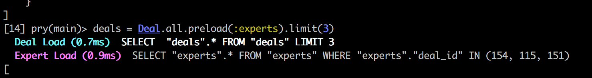

N+1 Problem - Database Quiry
Oct 20, 2016
When your database slow, what will you do?
Have you heard about N+1 problems in rails? When we make associations in ActiveRecord and call the associations, it may hit the database unnecessarily more than you may wish.
This operation hit total deals number * experts number to just render each expert's name. Instead of we can individually hit deal and its experts database, we can 'preload' experts when we load deal.
Preload
This will preload all experts instance associated with all deals. I actually had to limit(3) because the data was too big so I wasn't able to trace.
Preload will actually show 'join' record. So it doesn't have to go back to database every instance. There is another way to solve this problem - eager loading. eager_load is much popular because it allows using 'select' statements.
Eater Load
Eager loading is actually using LEFT OUTER JOIN. In terms of performance, eger_load nad preload are pretty similar. So which one to use?
Includes
Ya know that rails is pretty smart. They figure out and make '.includes' for you.
Includes makes a decision to use either eager_load or preload. If you are not use .where, it will use preload otherwise it will use eager_load. This is pretty cool, huh?
Count - Customized database quiry
Let's say you want to show how many experts are in individual deals.
Let's say we have expert and expert_category classes.
In order to render experts number by expert_category, we will do operation like this:
In this case, unfortunately, includes or eager_load do not make the quiry different. Becuase it is separate quiry. Although expert_category and experts are loaded, the count operation need to be done separately. In this case we can make hash of the each count by using 'group' method.